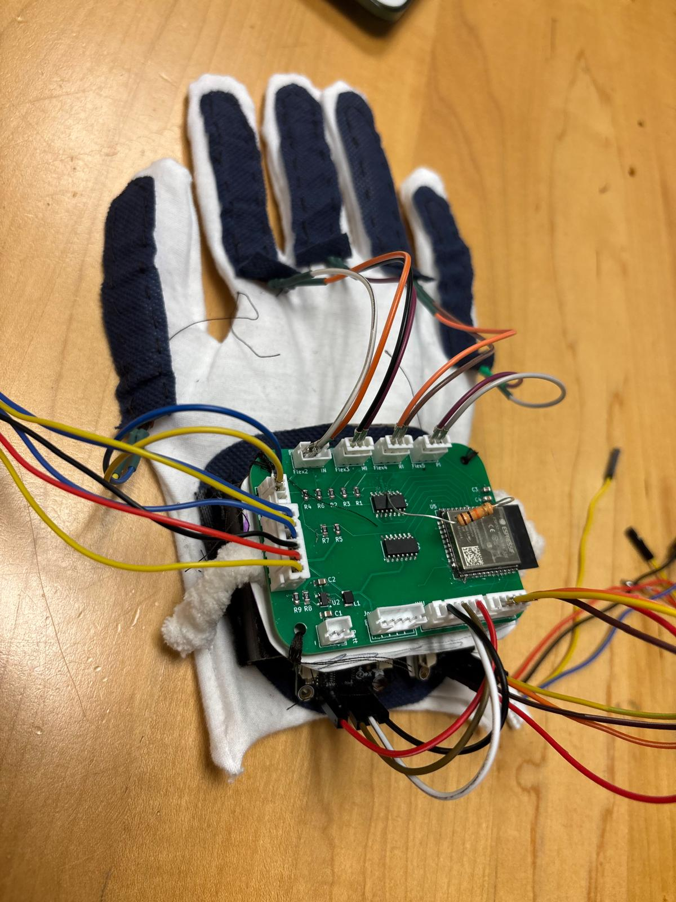
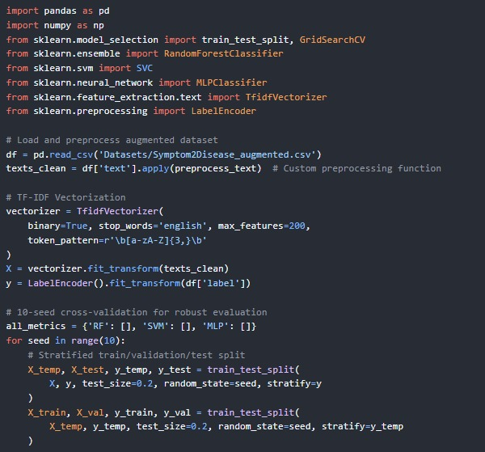
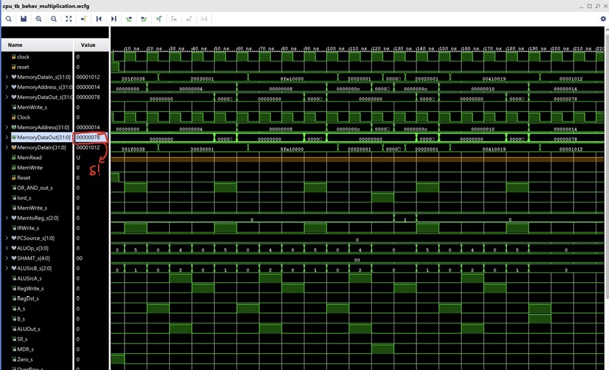

Iyan Nekib
ECE graduate from the University of Pittsburgh building systems where hardware meets software, from FPGA processors and embedded controllers to distributed cloud-native services and ML pipelines.
Hardware and software rarely agree. I keep opening the box anyway.


Technical skills
Three things I've built
A wider index of everything, with full write-ups, is on the projects page.
 In numbers
In numbers
End-to-end inference latency on the NEURA Glove's LSTM and Kalman pipeline — fast enough to stay inside VR presence thresholds.
I'm an Electrical and Computer Engineering graduate with hands-on experience in systems software, embedded engineering, and ML — from co-ops at Human Engineering Research Laboratories and Westinghouse Electric, to industry projects with Microsoft. I'm open to full-time roles in software engineering, embedded systems, and applied ML.
More about me